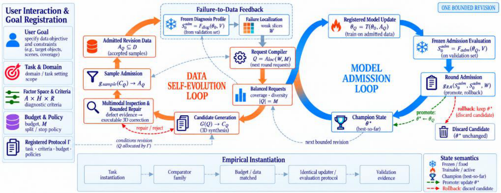
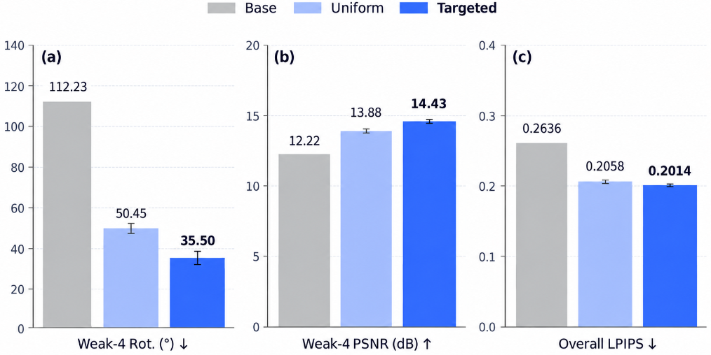
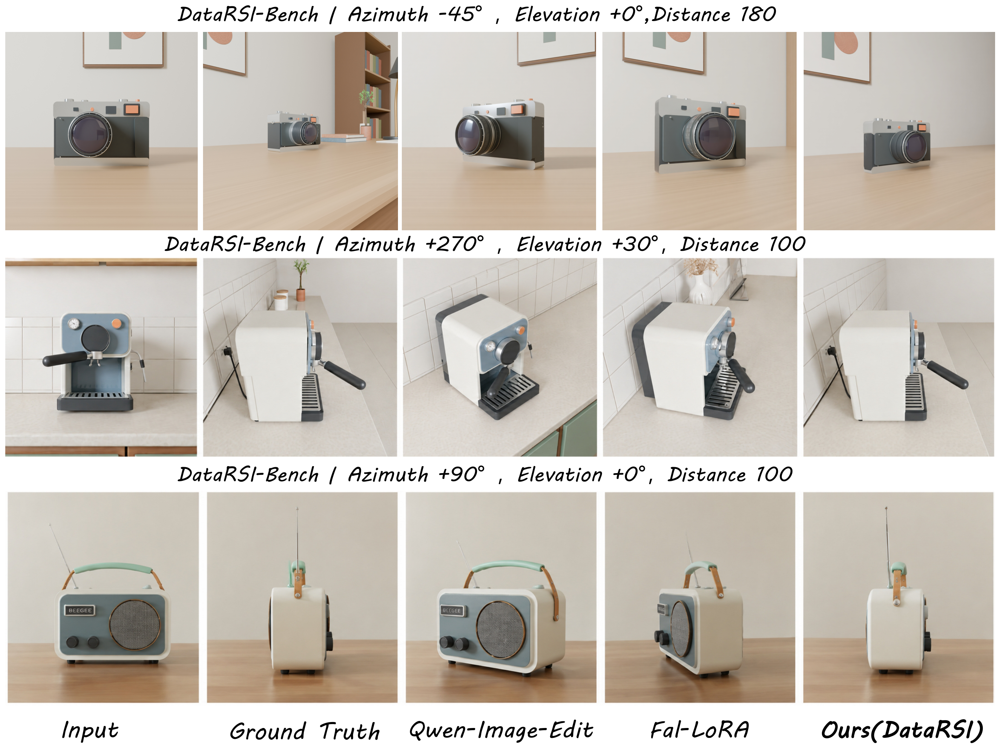

Figure 1: DataRSI as an automated 3D data harness. The Data Self-Evolution Loop (orange) inspects, repairs, and admits 3D supervision; the Failure-to-Data Feedback interface compiles downstream diagnostic evidence into registered requests; the Model Admission Loop (blue) trains candidate updates and applies regression guards to promote or roll back the champion state within one bounded revision.
Many existing 3D synthetic-data pipelines remain recipe-driven: they neither inspect sample defects, repair generation failures, nor convert downstream model weaknesses into subsequent data construction. We propose DataRSI, an automated 3D data harness that treats synthetic supervision as an explicit revision state and organizes dataset evolution into auditable bounded revisions. In this framework, frozen model failures are compiled into executable 3D synthesis requests; candidate supervision is gated before entering training, and candidate model revisions are gated before replacing the champion. DataRSI couples a generation-time Data Self-Evolution Loop (multimodal inspection, bounded environment repair, deterministic Sample Contract) with a post-training Model Admission Loop (frozen validation profiling, regression-aware admission) through an explicit failure-to-data interface. We instantiate DataRSI on camera-controlled editing over a structured 3D factor space. Under a matched 72-request budget, failure-directed allocation reduces diagnosed Weak-4 rotation error by 14.950 ± 1.097° over uniform allocation across three seeds (PSNR +0.543 ± 0.023 dB); non-target error remains substantially below Base (34.64° vs. 64.13°), while overall rotation changes by only +0.205 ± 0.125°. All three targeted candidates satisfy frozen regression guards and are promoted. Under this protocol, an audit confirms executable 3D sample repair on matching requests, while historical adaptation establishes task feasibility. Together, these controlled studies audit the key transitions of one bounded revision.
Synthetic supervision is treated as an explicit revision state governed by an immutable protocol Γ. Each bounded transaction starts from a frozen champion.
Downstream model failures over structured factor space are localized into Weak-4 slices and compiled into registered 3D requests that synthesize new supervision.
Candidate data is gated by a deterministic Sample Contract (with bounded repair), while candidate models must pass regression guards before champion replacement.
Under an identical matched budget of 72 synthesis requests across seeds 42, 43, 44, failure-directed allocation produces consistent geometric rotation improvements on diagnosed weak slices.

| Metric | Base | Uniform-72 | Targeted-72 | Targeted - Uniform Delta |
|---|---|---|---|---|
| Weak-4 Rotation Error (°) ↓ | 112.23 | 50.45 ± 2.15 | 35.50 ± 3.23 | -14.950 ± 1.097° (wins 3/3 seeds) |
| Weak-4 PSNR (dB) ↑ | 12.22 | 13.88 ± 0.07 | 14.43 ± 0.09 | +0.543 ± 0.023 dB |
| Overall LPIPS ↓ | 0.2636 | 0.2058 ± 0.0028 | 0.2014 ± 0.0030 | -0.0044 ± 0.0003 |

Figure 2: Qualitative camera-editing comparison on DataRSI-Bench. Top to bottom: rear angle (-45°, 0°), side angle (+270°, +30°), and lateral angle (+90°, 0°). DataRSI adheres strictly to requested camera perspectives.
Audited across 72 candidates at matching Weak-4 coordinates (independent Blender renders, distinct from Table 3 training pool):
Validates bounded physical restaging & radiometric adjustments without arbitrary manual tuning.
Candidate revisions are evaluated under frozen regression guards:
Canonical hard redline (< 5.000°) prevents champion replacement if core views degrade.
Reviewers can verify all reported tables, deltas, and verdicts directly from audited artifacts without GPU or weight downloads:
git clone https://github.com/PRIS-CV/DataRSI.git
cd DataRSI
pip install -r requirements.txt
# 1. Reproduce Table 1 & Table 3
python scripts/reproduce_tables.py
# 2. Verify 3/3 Model Admission Verdicts
python scripts/reproduce_admission.py
# 3. Inspect Executable Repair Audit
python scripts/reproduce_repair_audit.py
# 4. Verify Factor Space & Weak-4 Cells
python scripts/reproduce_diagnosis.py@inproceedings{zhang2027datarsi,
title = {DataRSI: A 3D Data Harness for Failure-to-Data Evolution},
author = {Zhang, Qisong and Wu, Wenzhuo and Jia, Zhuangzhuang and Yang, Yunhao and Zhang, Shuo and Zhang, Huayu and Zang, Xianghao and He, Zhixiang and He, Zhongjiang and Liang, Kongming and Ma, Zhanyu},
booktitle = {IEEE International Conference on Acoustics, Speech and Signal Processing (ICASSP)},
year = {2027}
}